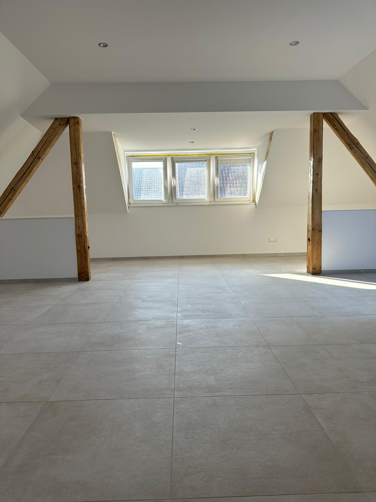
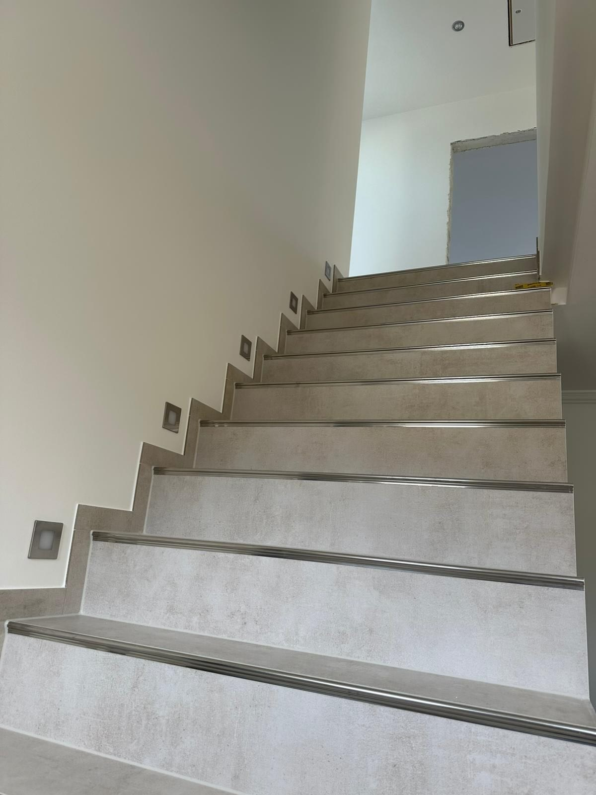
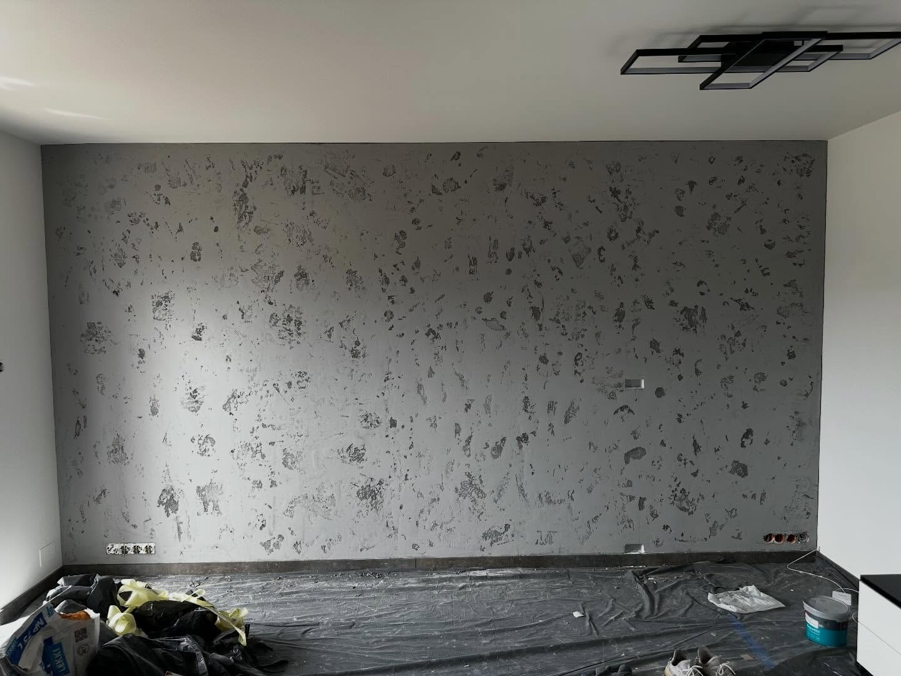
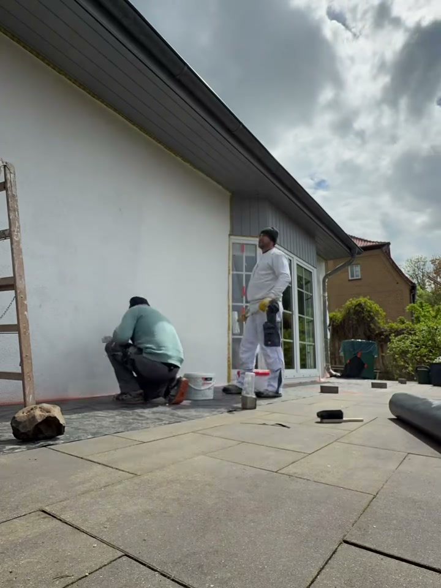

01
Poddasze pod klucz
Dom jednorodzinny · powiat grodziski
Gładzie na sufitach i skosach, malowanie, płytki wielkoformatowe, sucha zabudowa.

Szpachlowanie, malowanie, łazienki i sucha zabudowa. Ponad dwadzieścia lat na budowach — i jedna ekipa, która zostaje z Wami do końca roboty.




